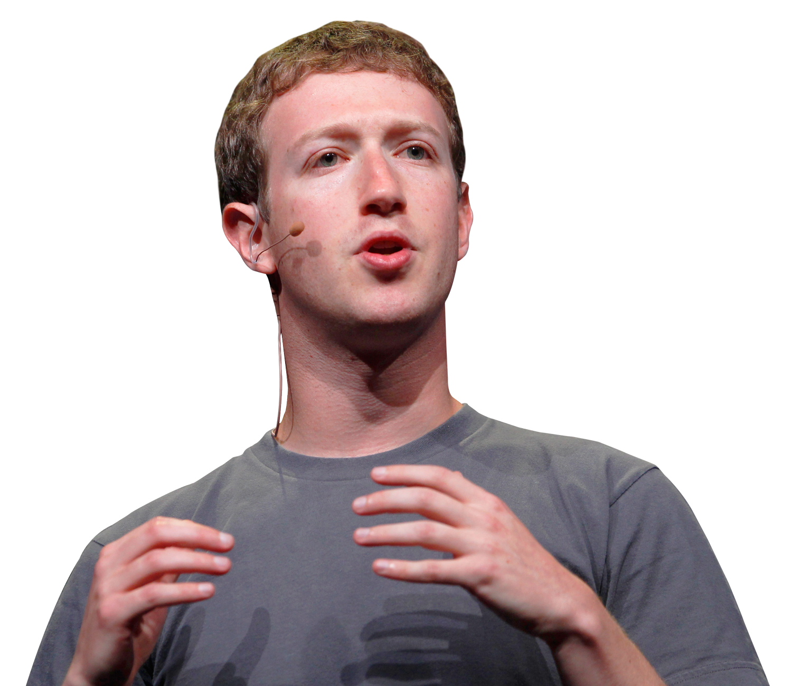

"Mark Elliot Zuckerberg (/ˈzʌkərbɜːrɡ/; born May 14, 1984) is an
American media magnate, internet entrepreneur, and philanthropist. He is
known for co-founding Facebook and serves as its chairman, chief
executive officer, and controlling shareholder. He also is a co-founder
of the solar sail spacecraft development project Breakthrough Starshot
and serves as one of its board members.
Zuckerberg attended Harvard University, where he launched the Facebook
social networking service from his dormitory room in February 2004 with
his roommates Eduardo Saverin, Andrew McCollum, Dustin Moskovitz, and
Chris Hughes. Originally launched to select college campuses, the site
expanded rapidly and eventually beyond colleges, reaching one billion
users by 2012. Zuckerberg took the company public in May 2012 with
majority shares. In 2007, at age 23, he became the world's youngest
self-made billionaire. As of October 2021, Zuckerberg's net worth is
$122 billion, making him the 5th-richest person in the world.
Since 2008, Time magazine has named Zuckerberg among the 100 most
influential people in the world as a part of its Person of the Year
award, which he was recognized with in 2010.In December 2016, Zuckerberg
was ranked 10th on Forbes list of The World's Most Powerful People."

Top 10 Abandoned Malls That Will Creep You Out
Metro North Mall, Kansas City
New World Mall, Bangkok
Gwinnett Place Mall, Duluth
Dixie Square Mall, Harvey
Old Town Mall, Baltimore
Randall Park Mall, North Randall
Rolling Acres Mall, Akron
Wayne Hills Mall, Wayne
Hawthorne Plaza Shopping Center, Hawthorne
The Acropolis, Mexico City